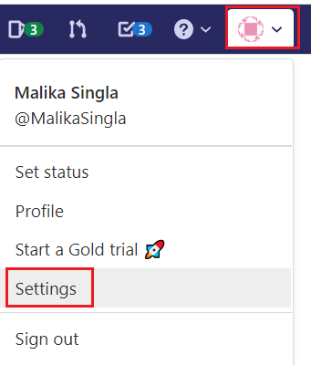
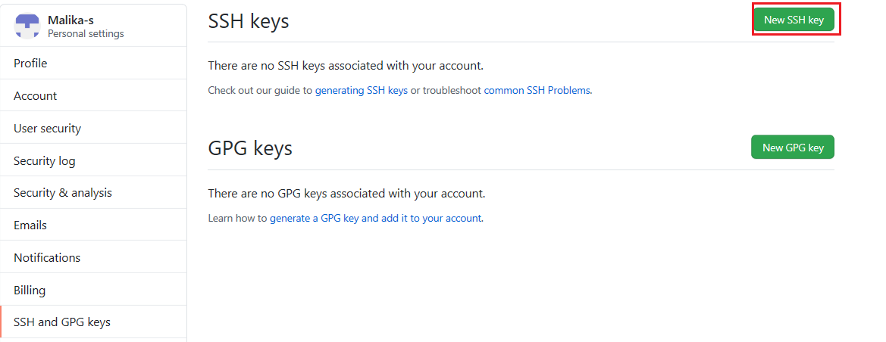

In the terminal, run the following command:
cat ~/.ssh/id_rsa.pub | clip
Note: If clip doesn't work, run cat ~/.ssh/id_rsa.pub in the command line and the copy the output.
Sign in to GitHub. At the top right, click the drop-down menu on your profile image and select Settings.

From the "Personal settings" menu, select SSH and GPG keys, as shown in the following image:

Click New SSH key.

Enter a title for the new SSH key. In the Key field, paste the key that you copied in step 1, above. The pasted key should include Your email address at the end, as shown in the following image:

Click Add SSH Key. The SSH key is added to your account.